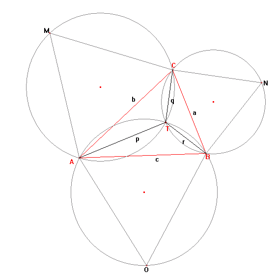

Let $ABC$ be a triangle with all interior angles being less than $120$ degrees. Let $X$ be any point inside the triangle and let $XA = p$, $XC = q$, and $XB = r$.
Fermat challenged Torricelli to find the position of $X$ such that $p + q + r$ was minimised.
Torricelli was able to prove that if equilateral triangles $AOB$, $BNC$ and $AMC$ are constructed on each side of triangle $ABC$, the circumscribed circles of $AOB$, $BNC$, and $AMC$ will intersect at a single point, $T$, inside the triangle. Moreover he proved that $T$, called the Torricelli/Fermat point, minimises $p + q + r$. Even more remarkable, it can be shown that when the sum is minimised, $AN = BM = CO = p + q + r$ and that $AN$, $BM$ and $CO$ also intersect at $T$.

If the sum is minimised and $a, b, c, p, q$ and $r$ are all positive integers we shall call triangle $ABC$ a Torricelli triangle. For example, $a = 399$, $b = 455$, $c = 511$ is an example of a Torricelli triangle, with $p + q + r = 784$.
Find the sum of all distinct values of $p + q + r \le 120000$ for Torricelli triangles.